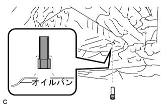
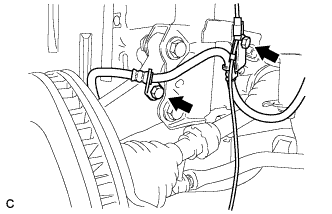
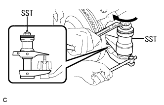
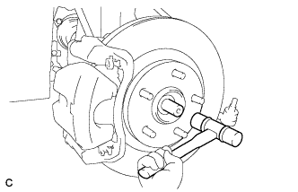
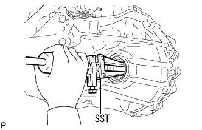
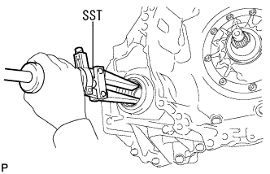

Front Differential Oil Seal (U660E) Removal |
| 1. Remove Front Tire |
| 2. Remove Engine Under Cover NO.1 |
Remove the 6 bolts and 7 clips, and remove engine under cover No.1.
| 3. Remove Engine Under Cover Rear LH |
Remove the 5 clips and the engine under cover rear LH.
| 4. Remove Engine Under Cover Rear RH |
Remove the 5 clips and the engine under cover rear RH.
| 5. Drain Automatic Transaxle Fluid |
 |
Remove the refill plug and gasket.
 |
Using a socket hexagon wrench 6, remove the overflow plug and gasket.
 |
Using a socket hexagon wrench 6, remove transmission oil filler tube NO.1 and drain the automatic transmission fluid.
Using a socket hexagon wrench 6, install transmission oil filler tube NO.1.
|
Install the overflow plug with a new gasket.
|
Install the refill plug with a new gasket.
| 6. Remove Front Axle Shaft Nut LH |
 |
Set the SST aligned with the groove of the front drive shaft assembly LH, and using a hammer, unstake the front axle hub nut LH.
Using a socket wrench (30mm), remove the front axle hub nut LH.
| 7. Remove Front Axle Shaft Nut RH |
| 8. Disconnect Speed Sensor Front LH |
 |
Remove the 2 bolts and disconnect the speed sensor wire and flexible hose.
 |
Remove the bolt and disconnect the speed sensor front LH from the steering knuckle.
| 9. Disconnect Speed Sensor Front RH |
| 10. Disconnect Tie Rod End Sub-assembly LH |
Remove the cotter pin and castle nut.
 |
Using SST, disconnect the tie rod end LH from the steering knuckle.
| 11. Disconnect Tie Rod End Sub-assembly RH |
| 12. Disconnect Front Suspension Arm Sub-assembly Lower NO.1 LH |
 |
Remove the 1 bolts and 2 nuts.
Push down the front suspension lower arm No.1 LH and disconnect it from the front lower ball joint LH.
| 13. Disconnect Front Suspension Arm Sub-assembly Lower NO.1 RH |
| 14. Disconnect Front Stabilizer Link Assembly LH |
 |
Remove the nut and disconnect the front stabilizer link assembly LH from the front shock absorber w/ coil spring.
| 15. Disconnect Front Stabilizer Link Assembly RH |
| 16. Disconnect Front Axle Assembly LH |
 |
Using a plastic hammer, lightly tap the end of the front drive shaft assembly LH to disengage the front drive shaft assembly LH from the front axle assembly LH.
Push the front axle assembly LH toward the outside of the vehicle and pull the front drive shaft assembly LH out of the front axle assembly LH.
| 17. Disconnect Front Axle Assembly RH |
| 18. Remove Front Drive Shaft Assembly LH |
 |
Using SST, remove the drive shaft assembly LH.
| 19. Remove Front Drive Shaft Assembly RH |
 |
Remove the 2 bolts and drive shaft assembly RH from the bearing bracket.
| 20. Remove Transaxle Case Oil Seal NO.2 |
 |
Using SST, remove the oil seal from the transaxle case.
| 21. Remove Front Transaxle Case Oil Seal NO.1 |
 |
Using SST, remove the oil seal from the transaxle housing.